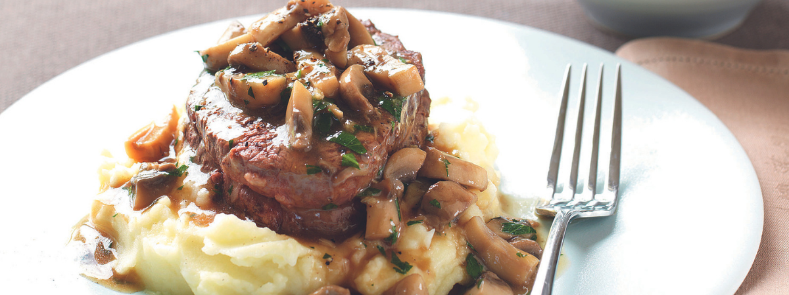

Steak and Mashed Potatoes

Start the day with a hearty meal of steak and mashed potatoes
Ingredients
- 400 g Cup mushrooms
- 2 tbsp Olive oil
- 1 Garlic clove
- 1 tbsp Worcestershire sauce
- 1 cup Beef stock
- 1 tsp Dijon mustard
- 2 tsp Cornflower
- Handful of flat-leaf parsley - chopped
- 4 Steaks - Rib eye or Porterhouse
- 1 kg Choose a creamy yellow type of potato, like Dutch cream or Desiree potatoes
- 200 g Real butter - unsalted. Dice into cubes
- ¾ cup Full Cream Milk or Cream
Steps
- After you have made the mashed potato, preheat oven 180°C fan forced. Heat half the oil in saucepan over high heat. Add mushrooms and garlic, cook for 5 minutes or until mushrooms are tender. Combine the Worcestershire sauce, stock and mustard in a jug. Stir into the mushrooms, cook, stirring occasionally for 3 minutes.
- Blend the cornflour with 1 tbs cold water until smooth. Stir cornflour mixture into mushrooms. Bring to the boil, reduce heat to medium and cook, stirring occasionally, for 5 minutes or until sauce thickens slightly. Stir in the parsley.
- Meanwhile, heat char-grill pan over high heat. Rub both sides steaks with remaining oil. Char-grill for 2—3 minutes each side until seared. Transfer to the oven and cook a further 5 minutes for medium or until cooked to your liking.
- Spoon mash potato onto plates, top with steak. Spoon over mushroom sauce, serve with steamed vegetables, if desired.
- Peel and chop potatoes into 2.5cm/1" cubes. Add to a pot and cover with cold water, with a pinch of salt added. Cover with a lid and bring to the boil, cooking for 15 minutes until soft. Drain well. Keep your dry pot for the next step.
- For the softest potatoes, put a handful at a time into a fine metal sieve. Using a soft spatula or the back of a spoon, pass the potatoes through the sieve and into the dry pot. Continue until all potatoes have been mashed through the sieve. Turn the stove on low and stir potatoes for 1 minute, to evaporate the excess water
- Add a few cubes of butter and a dash of milk. Stir until incorporated. Repeat until all butter and milk is used. Season to taste with salt and pepper. When your steak is resting, turn the stove on low and stir to reheat.